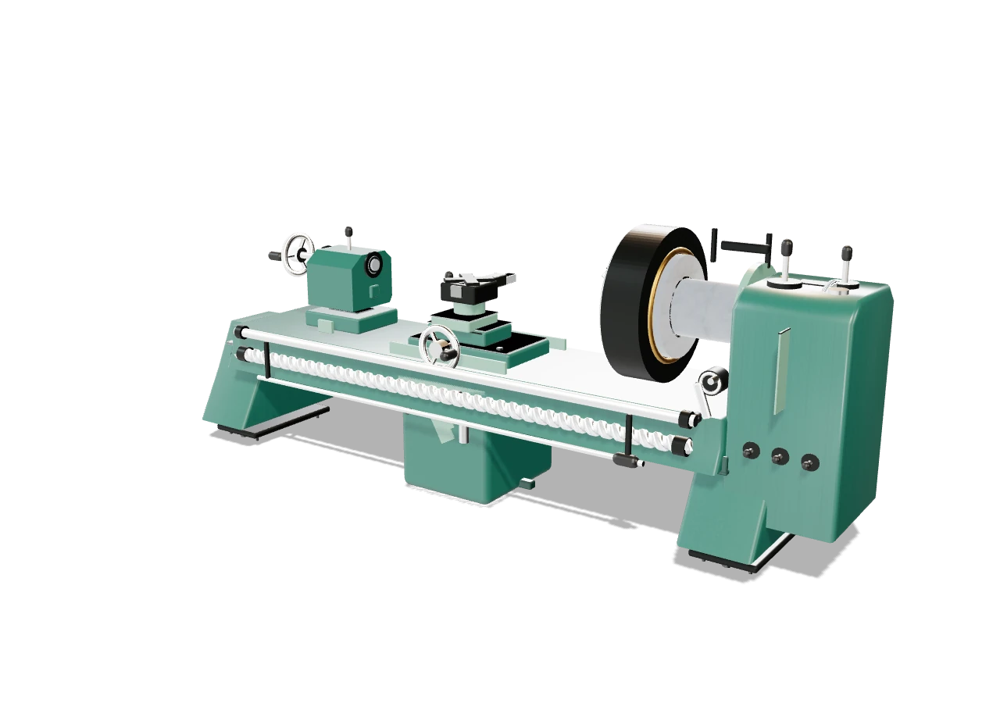

品牌与短标题
得意黑 Smiley Sans
原生窄斜字形，带切削般的斜向势能。只放在首页大标题、品牌字和机台名称，让最重要的几句话先被看见。
字体来源 ↗独立提案 · 尚未应用到网站
窄而有势的标题、清楚克制的正文、像设备铭牌一样的数字。
保留现在的近黑底色、奶油白和橙色，让字体本身产生变化。
正在预览：得意黑 + IBM Plex 字体家族

字体效果示意 · 模型为现有通用结构
品牌与短标题
原生窄斜字形，带切削般的斜向势能。只放在首页大标题、品牌字和机台名称，让最重要的几句话先被看见。
字体来源 ↗正文与界面
正文、菜单和按钮保持正体，保留清楚的字腔与笔画。用留白和字号建立层级，让页面有个性，也能轻松阅读。
字体来源 ↗数字与单位
窄体数字更像机台铭牌。参数用大号实心数字，单位缩小并对齐基线；型号和台数使用同一套数字语言。
字体来源 ↗中等字重负责标题，常规字重负责说明。
正文不使用斜体，也不刻意拉宽字距。
线上线下沟通，中小件为主。大件需沟通协商。
激光切割、折弯与焊接。
先看机台类型、故障与所在地区。
数字采用 Plex 窄体，文字与数字分工。
以下沿用网页已有设备信息。
6000W
1 台
165吨
1 台
6 台车床 含 1 台数控车床
3 台铣床 北京 / 三明 / 炮塔
4 台钻床 武夷山台钻
输入内容只在当前预览页显示，不会保存或发送。
从结构，看懂机台。
此页只演示字体方案，机台使用静态画面。正式网站与原动效尚未修改。字体的原始许可与来源随预览文件保留。